Journey of the Prairie King
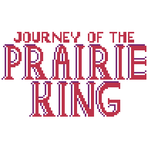 |
Journey of the Prairie King is a SmashTV-style minigame that can be played on one of the arcade machines in The Stardrop Saloon. Beating the game will award the player with a Prairie King Arcade System, delivered by mail the next day. Abigail also possesses a console version of the game that can be played during her 2-Heart Event. Random elements of the game are not affected by Luck.[1]
Please note that none of the power-ups or enemies are referenced by any name in-game, so they have been named by members of the community.
Gameplay Mechanics
Journey of the Prairie King is a top-down shooter, resembling "twin-stick" shooters such as "Smash TV". WASD moves the character and ↑←↓→ shoots. The player can move and shoot diagonally by combining two keys (e.g., W and A together move up and left diagonally). While using a controller, the left joystick moves, and the right joystick shoots. The D-Pad can also be used for movement and the button pad can also be used for shooting.
In the mobile version of the game, there are two transparent red circles. The one on the left moves the character and the one on the right aims.
The player begins with four lives (shown as "x3" in the upper left), and is instantly killed upon contact with an enemy or projectile. Losing every life (when the counter changes from "x0" to "x-1") results in a Game Over. In each level, a timer bar counts down at the top of the screen while waves of enemies appear from the edges of the screen and move toward the player. Enemies stop spawning when the timer bar has counted down completely, and the level is completed when all enemies are defeated, allowing progress to the next area.
Enemies will sometimes drop power-ups, coins and extra lives upon being killed. One power-up at a time can be stored in a slot in the top-left, and can be activated by pressing Space. If a power-up is picked up while another is already being held, the new power-up is consumed immediately. Power-ups last only for a short time.
Items Dropped by Enemies
| Image | Name | Description |
|---|---|---|
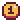 |
1 Coin | Increases coin count by 1. |
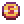 |
5 Coin | Increases coin count by 5. Appears less often than the single Coin. |
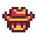 |
1-Up | Increases life count by 1. |
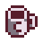 |
Coffee | Increases movement speed. Lasts about 16 seconds. |
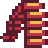 |
Heavy Machine Gun | Significantly increases fire rate. Lasts about 12 seconds. |
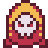 |
Screen Nuke | Instantly destroys all enemies on-screen. Enemies killed like this do not drop items. |
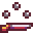 |
Shotgun | Causes three bullets to be fired at once in a cone at a slower rate. Lasts about 12 seconds. |
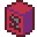 |
Smoke Bomb | Teleports the player to a random spot on-screen and causes enemies to stand still with question-marks above their head. Enemies will continue to spawn, building up inside the spawn zones. Lasts about 4 seconds. |
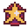 |
Sheriff Badge | Increases fire rate and movement speed, and causes three bullets to be fired at once in a cone. Effectively a combination of the machine gun, shotgun and coffee (although fire-rate and movement speed bonuses are slightly lower than from coffee/machine gun). With max boots/gun upgrades, this item is only a minor buff. Lasts about 24 seconds. |
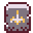 |
Tombstone | The player becomes a zombie for a brief amount of time, granting increased movement speed and the ability to kill on contact. Enemies flee from the player. Lasts about 8 seconds. (Note: This power-up does not grant protection from bullets fired by bosses.) |
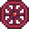 |
Wagon Wheel | Causes the player to fire in 8 directions at once. Lasts about 12 seconds. |
Upgrades
A Vendor appears after certain levels are completed and will present the player with three upgrades that can be purchased with coins dropped by enemies (see above). Only one item may be purchased per visit, and the items in each slot are always presented in the same order, requiring the first item in that slot to be purchased before the next one is shown in a later level, etc. (For example, both boots upgrades must be purchased before an extra life can appear in the first slot.)
The Vendor appears at the end of every second level: 1-2, 1-4, 2-1, 2-3, 3-1 and 3-3.
| Vendor Slot | Image | Name | Purchase Price | Description |
|---|---|---|---|---|
| 1 | 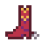 |
Boots | 8 | Upgrades movement speed. |
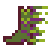 |
20 | |||
| 1-Up | 10 | Get an extra life. Can be purchased again at the next vendor. | ||
| 2 | 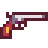 |
Gun | 10 | Increases shooting speed. |
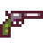 |
20 | |||
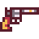 |
30 | |||
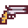 |
Super-Gun | 99 | Applies the effect of the Shotgun powerup permanently without the fire-rate debuff. Will also be shown as a 4th icon on the left, on top of the other 3. Picking up the shotgun power-up will not increase the bullet spread, but will still decrease fire-rate. This upgrade is only available in hard mode. Requires all other gun and ammo upgrades to be purchased before it will appear. | |
| Sheriff Badge | 10 | Get a Sheriff Badge. Can be purchased again at the next vendor. | ||
| 3 | 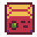 |
Ammo | 15 | Increases bullet damage to 2 / 3 / 4. Bullets gain penetration, such that if a bullet destroys an enemy with damage left over, it will keep going until its damage is depleted, allowing at least two weak enemies to be killed with one bullet. |
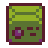 |
30 | |||
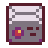 |
45 | |||
| Sheriff Badge | 10 | Get a Sheriff Badge. Can be purchased again at the next vendor. |
Enemies
| Image | Name | HP | Description | First appears in |
|---|---|---|---|---|
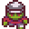 |
Orc | 1 | Walks slowly towards the player, often spawning in large numbers. | Stage 1 (areas 1-4) |
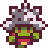 |
Spikeball | 2 while moving, 7 while deployed | Enters the area, walks to a random location, and deploys into an armored spikeball. Kills the player on contact, whether deployed or undeployed. If time has run out and the only remaining enemies are spikeballs, their HP is reduced to 1. Damage done to the Spikeball while it is moving is still effective after it deploys. | Stage 1 (areas 2-4) |
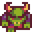 |
Ogre | 3 | Moves slowly. Destroys spikeballs on contact. | Stage 1 (areas 3-4), Stage 2 (areas 1-3) |
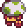 |
Mushroom | 2 | Moves quickly, running as fast as a player without speed upgrades. | Stage 2 (areas 1-3) |
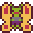 |
Evil Butterfly | 1 | The first flying enemy. Can spawn anywhere on the perimeter and fly towards the player. Can also fly over obstacles. | Stage 2 (areas 1-3) |
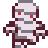 |
Mummy | 6 | Moves slowly. Spawns in large hordes. | Stage 3 (areas 1-3) |
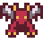 |
Imp | 3 | A flying enemy that can spawn anywhere on the perimeter, seeking the player. Can fly over obstacles and is not distracted by the Gopher or deterred by the Tombstone power-up. | Stage 3 (areas 1-3) |
Friendlies
| Image | Name | HP | Description | Appears in |
|---|---|---|---|---|
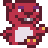 |
Gopher | ∞ | Distracts enemies, drawing them towards it and killing them on impact. Does not harm the player and cannot be killed by the player. Disappears after it has fully crossed the screen.
Gophers may carry the player on a parade float after defeating a boss. |
Random |
Bosses
| Image | Name | HP | Description | Appears in |
|---|---|---|---|---|
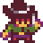 |
Cowboy | 50 (1st fight), 100 (2nd fight) | Both fights with the cowboy take place in open fields with little cover. The player and cowboy are separated by a ravine/river, which can only be crossed with a lucky smoke bomb. The cowboy will run out of cover and shoot a volley of bullets upwards, sometimes matching the player's movements, before retreating back to cover. He often pauses behind cover, and sometimes outside of cover. Upon dying, the boss drops an extra life, a bridge appears crossing the river, and a raft pickup appears which sends the player to the next stage. | Stage 1 (area 5), Stage 2 (area 4) |
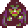 |
Fector | 350 | Fector is the final boss and is significantly more difficult than the Cowboy. Movement is not restricted on this stage, for the player or for Fector. Fector can fire directly at the player, or in eight directions as with the Wheel power-up. As his health decreases, he starts summoning enemies. The player is victorious after defeating Fector. | Stage 3 (area 4) |
Levels
| Screenshots of each level | ||||||||||||||||||||||||
|---|---|---|---|---|---|---|---|---|---|---|---|---|---|---|---|---|---|---|---|---|---|---|---|---|
|
Hard Mode
After completing Journey of the Prairie King, the player has the option to start over in Hard Mode. All upgrades and coins are carried over into the new game, but lives reset to the default "x3", and held power-ups are removed. Enemies spawn in greater numbers, some move faster, and each has at least one extra hit point. Additionally, Imps now spawn in every level except boss stages, and extra lives drop far less often.
Each time a harder mode is beaten, the option to start once again is offered, with the game getting progressively harder each time.
Saving Mechanics
The game autosaves after each completed level (upon entering the next level, not when the exit opens up) as well as each death. Your held item, upgrades, lives, and time left in the current level will all save. Whenever you exit a run in progress and return to the game later, you can resume playing from the autosave or start a new run from the beginning.
The game does not autosave if you die during a boss fight. You can exploit this to retry the boss fight until you beat it without losing any lives. You can also abuse the save system further by going to sleep after completing each level and restarting the current day whenever you die, so that you can continue from the save before you died. Both of these techniques can allow players to get the Fector's Challenge achievement more easily.
Trivia
- There is a Lost Book about this game titled Journey of the Prairie King -- The Smash Hit Video Game!.
- Zoom level also influences the portion of screen the arcade game takes up.
- If the zoom level is high enough, parts of the screen will be cut off. Playing on the default zoom level in windowed mode results in enough cutoff to hide the time bar at the top.
- The title of the game is most likely a reference to the "River King" games (a series of fishing RPGs made by Marvelous, who also made the Harvest Moon/Bokujo Monogatari series), specifically the Game Boy title released in the US as Legend of the River King.
- Unlike elsewhere in Stardew Valley, pressing Esc does not pause the game, exiting instead. Unlike with Junimo Kart, p does not pause the game either. The game can be paused on PC by opening the Steam overlay.
Bugs
- If the nuke power-up is used during the first boss fight, the enemy will vanish from the screen but the stage will not end, resulting in a softlock. This also occurs when using the Tombstone power up against Fector.
- Leaving the game while in the Gopher carrying sequence after defeating a boss, then continuing it, will cause the boss music and health bar to reappear on continuation, with the boss spawning as soon as the next stage begins. If the player dies (the boss will despawn in that case) or the boss dies, the music will keep playing until they reach the next boss. Additionally, performing the glitch again on the next boss will cause the music to carry over out of JotPK and into the rest of the game. This will not end until Stardew Valley is completely restarted.
- Leaving the game just before the Gopher carrying sequence begins, then starting a new game, will cause the Gopher carrying sequence to happen anyway before the first level begins while still resetting your upgrades, lives and coin counter as normal for a brand new run.
References
- ↑ Twitter link: https://twitter.com/concernedape/status/1094755018945703937
Archive link: https://archive.ph/2YOMU
History
- 1.0: Introduced.
- 1.1: After beating the game, the player can play in Hard Mode.
- 1.5: Progress can now be saved and resumed, so it can be completed in multiple sessions. The original difficulty can now be replayed even if the player already completed it. (Previously it would increase difficulty automatically, which is now a New Game+ mode.)
- 1.5.2: Fector can no longer instantly be killed with a Tombstone.
- 1.6: Fixed a bug where, if you were disconnected from a multiplayer game while playing Journey of the Prairie King, the level music would continue to play on top of the rest of the music.